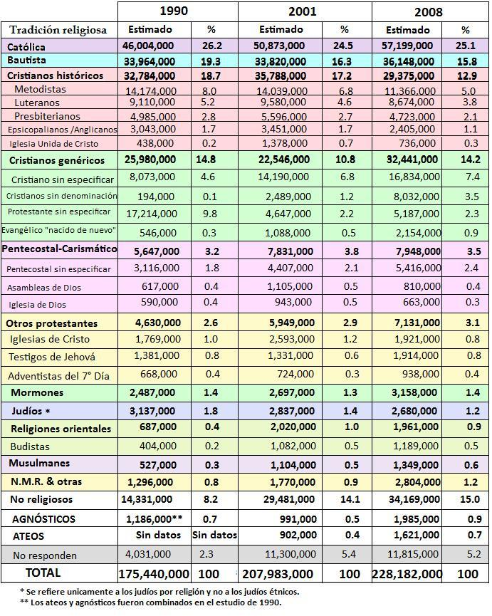

El American Religious Identification Survey (estudio de identificación religiosa americana) ARIS 2008 organizado por el Trinity College de Connecticut ya fue publicado y muestra los cambios en la identificación religiosa de los estadounidenses durante las dos últimas décadas.
Las encuestas fueron realizadas entre febrero y noviembre del 2008 a una muestra de 54,461 personas entrevistadas en ingles o español.
El estudio del 2008 incluyó una pregunta sobre la creencia en la existencia de Dios. “Respecto a la existencia de Dios, usted piensa…”
No existe 2,3%, No hay forma de saber 4,3%, No estoy seguro 5,7%, Existe un gran poder, pero no un Dios personal 12.1%, Definitivamente hay un Dios personal 69,5%, Rehusaron responder 6,1%
Es sorprendente el gran porcentaje de estadounidenses que tienen una concepción deísta o pagana sobre la divinidad, un 12%, y un poco menos del 70% creen el concepto tradicional de un Dios personal. Como esta pregunta no se realizó en los dos estudios anteriores no se puede comparar la evolución estadística de estas creencias.
En cuanto al cristianismo se puede decir que es la religión predominante en el país del norte, pero el estudio muestra que cada vez los Estados Unidos se hace menos cristiano. En tan solo una generación, los cristianos (católicos y evangélicos) se han reducido en más de un 11%. 86% de los adultos estadounidenses se identificaron como cristianos en 1990 comparado con 76% en el 2008.
Los católicos siguen siendo uno de cada cuatro. El porcentaje está en el 26%, pero esto se debe a la inmigración latina y no por nuevas conversiones de los americanos anglosajones. Los católicos han crecido por la llegada de millones de inmigrantes latinoamericanos. De hecho, la mayoría católica norteamericana se ha movido de Nueva Inglaterra al Suroeste de EE.UU. Esto debido a que los estados del Suroeste tienen mayor porcentaje de latinoamericanos. * “El declive del catolicismo en el Noreste del país no nos sorprende”, *”Gracias a la inmigración y el crecimiento natural de los hispanos, California tiene un porcentaje mayor de católicos que Nueva Inglaterra” afirmó Barry Kosmin, uno de los investigadores principales de ARIS. La geografía religiosa de los Estados Unidos se ha transformado desde 1990, muestra de ello es entre el 1990 y el 2008 el porcentaje de católicos en Nueva Inglaterra se redujo de 50% a 36% mientras en Nueva York bajó de 44% a 37%, en California aumentaron de 29% a 37% y en Texas de 23% a 32%.
Las Iglesias históricas protestantes, como los luteranos, episcopalianos y metodistas han sido los grupos religiosos que más pérdida de feligreses han tenido. Los bautistas bajaron 4 puntos, de un 19,3% en el estudio en 1990 a un 15,8%. El porcentaje de metodistas se redujo del 8% al 5%.
Los cristianos sin denominación específica, es decir aquellos que se dicen cristianos pero no asisten a ninguna iglesia, se ha duplicado, especialmente desde el 2001, y ya suman el 15% de la población. Estos cristianos sin afiliación ya son el cuarto grupo más numeroso, después de los católicos (26%), los bautistas (15%) y los protestantes históricos 18%.
Grupos surgidos en el siglo XIX como los adventistas del séptimo día y los testigos de Jehová se han mantenido durante las dos últimas décadas. Lo mismo se puede decir para los mormones. Pero ninguno de los anteriores ha alcanzado el 1%. Los porcentajes de población negra o asiática dentro del mormonismo son prácticamente nulos.
Pero no todas las feligresías disminuyeron. Los evangélicos “nacidos de nuevo”, conocidos por reunirse en megaiglesias, tener eventos en estadios y tener estaciones de radio y TV han mantenido un leve crecimiento. El grupo 34% de los adultos estadounidenses se consideran cristianos “evangélicos” o “vueltos a nacer” en el 2008.
La movilidad de la sociedad también tiene mucho que ver con el cambio del mapa religioso de los EEUU. Al envejecer la población cristiana y mudarse a lugares de retiro, como la Florida en el sur de los EEUU, esas áreas muestran un crecimiento en cristianos. El estudio muestra que a pesar del crecimiento poblacional y la inmigración que ha añadido casi 50 millones de adultos, casi todas las denominaciones religiosas han perdido feligreses desde la primera encuesta en 1990. Muchos de los que crecen en la iglesia se desvinculan totalmente de la misma y también de la Biblia. El domingo por la mañana significa para ellos jugar en un parque, no orar en un banco de iglesia. El reto al cristianismo en los Estados Unidos no proviene de otras religiones sino de un rechazo hacia todas las formas de religión organizada
Mientras tanto, Tony Perkins, presidente de la organización cristiana Family Research Council afirma que el declive de la población cristiana tuvo su mayor impacto en los años 1990, siendo mucho menor en la primera década del siglo XXI. Señala también que a partir de 2001, después de los ataques terroristas del 11 de septiembre la pérdida de feligreses fue menor. De ahí que la caída en los últimos 8 años ha sido mucho menor. Un 0.7 por ciento que comparamos con el 9.5 sufrido en la década anterior.
El líder cristiano confía que la crisis económica del 2009 haga que más cristianos vuelvan a las iglesias. “Si tomaran la encuesta el próximo año, el resultado sería diferente. A medida que la economía decaiga, creo que la gente acudirá a la religión.” Lo que implica que la mayoría de las personas acuden a la fe cuando las cosas van mal ¿Alguna relación con el símil de Marx de que la religión es el opio del pueblo?
La fe judía también ha disminuido, pues de 3.1 millones practicantes cayeron a 2.7. Cifra que representa el 1.2 de la población del país. Sin embargo, el porcentaje de musulmanes ha duplicado, pero continúa siendo estadísticamente muy pequeño con tan sólo el 0.6 por cien de la población. Se estima que 1‘349.000 de los norteamericanos siguen la fe de Mahoma. Esta cifra es muy inferior a la defendida por el American Muslim Council (AMC) quien afirmaba por el 2001 que la población musulmana de EEUU era de más de siete millones.
En cuanto a sexos hay más mujeres cristianas (de cualquier denominación) y judías que hombres. La mayor diferencia la hay entre los grupos pentecostales que tienen un 58% de mujeres y 42% de hombres. En el islam la situación es diferente, siendo los hombres mayoría con el 52%.
Muchos estadounidenses están explorando otras experiencias espirituales, y este grupo minoritario ha crecido. De hecho hubo crecimiento en los movimientos no cristianos. En EE UU existen casi 2,8 millones de personas que ahora se identifican con docenas de nuevos movimientos religiosos. En esta categoría se incluyen los seguidores de la Nueva Era, Druidas, Rastafarís, la Iglesia de Cienciología y los llamados WICCA. La fe Wicca es una forma contemporánea de paganismo, llamada también neopaganismo. Esta fe incluye la reverencia por la naturaleza y la creencia en muchos dioses.
También hay muchos estadounidenses que están perdiendo su fe. La población de EEUU continúa mostrando evidencia de que se esta haciendo menos religiosa, uno de cada cinco estadounidenses no indicó ninguna preferencia religiosa en el 2008. Los que respondieron que no tienen “Ninguna religión” continúan aumentando, aunque a una tasa mas lenta que durante los 1990s. Aumentando de 8.2% en 1990 a 14.1 en el 2001, a 15% en el 2008. En tan sólo 18 años EEUU se acerca más a Europa en su situación espiritual.
El grupo étnico con menor identificación religiosa son los asiático-americanos. Si bien es cierto que no todo este 15% de no religiosos se pueden llamar como ateos el estudio muestra, para terror de los religiosos, que hay más ateos y agnósticos que nunca antes. Siendo la población de agnósticos mayor que la de ateos.
Algunos líderes religiosos afirmaron que en realidad el ateísmo no está creciendo en los EEUU. Según William Donohue, presidente del Catholic League “No es que el ateísmo esté en aumento. Sino que hay gente que no quiere que le digan lo que tienen que hacer” Sin embargo, la encuesta fue clara al preguntar y clasificar las opciones de “No religiosos” entre ateos, agnósticos y seculares. El estudio de 1990 había juntado los datos de agnósticos y ateos. La encuesta asegura que la cantidad de ateos (que no creen en Dios alguno) o agnósticos (que no están seguro sobre la presencia de un Dios) ha aumentado dramáticamente de 900,000 a 1.6 millones. Un modesto 1.6 por ciento de la población. Los ateos son minoria, pero una minoría en crecimiento.
Otro indicador de la erosión de la afiliación religiosa de los estadounidenses es que el 27% que respondió que no espera un funeral religioso al morir.
El estudio más cercano de la situación en Latinoamérica es del 2005, y fue hecho por Gallup Internacional en todo el mundo. Frente a la pregunta ¿diría usted que es una persona religiosa, no religiosa o un ateo convencido?” se conoció que Latinoamerica es la segunda región del mundo más religiosa después de África, 91% y 82% son los datos para las dos principales regiones religiosas del mundo.
Ese estudio también mostró que en la mayoría de los países latinoamericanos, aproximadamente ocho de cada diez ciudadanos son religiosos. Las excepciones son Guatemala (64%) y Uruguay (54%). Para la Argentina, en el 2005, los datos afirmaban que el 80% se define como religioso y sólo un 2% señala que es ateo convencido. Un porcentaje que dobla al de 2008 de los Estados Unidos. Sin embargo, Argentina tiene una tendencia creciente de la religiosidad, al comparar los resultados con otros sondeos realizados en los últimos 20 años. En 1984, el 62% se proclamaba religioso, proporción que ahora creció al 80%. En ese período, los “ateos convencidos” bajaron del 5% al 2%. En la Argentina se advierten hoy más personas religiosas entre las mujeres (84%) que entre los hombres (75 %) y entre los adultos mayores (90%) que en los jóvenes (67%). También la religiosidad aumenta a medida que hay menos ingresos económicos, pues entre quienes se declararon religiosos en Argentina el 84% son de clase baja y media baja, frente al 62% de los de las clases alta y medio alta.
El estudio de Gallup del 2005 registró que para todo el mundo que se detectan personas más religiosas entre las mujeres; a medida que aumenta la edad, y en los niveles socioeconómicos menos educados y más pobres. Una respuesta que fue similar al ARIS-2008 de EEUU. Las mujeres (71%) son comparativamente más religiosas que los hombres (61%) y hay más varones no religiosos (28%) y ateos convencidos (7%). Se constató, además, que, con la edad aumenta la religiosidad. El 70% de los mayores de 50 años se consideran religiosos, número que baja siete puntos entre los menores de 30 años (63%).
Una conclusión importante es que la educación y el ingreso son factores que también parecen influir en la religiosidad de la gente. Las personas sin educación o con sólo una educación básica (76%) son más religiosas que las personas con educación secundaria (62%) o con educación superior (64%). La religiosidad es más fuerte en hogares de bajos ingresos (70%), cuando se los compara con respondentes de ingreso medio o alto (63% y 62%, respectivamente).
Teniendo en cuenta la encuesta Gallup del 2005 se puede afirmar que hay más ateos en Latinoamérica que en los EEUU. Los “ateos convencidos” somos en el mundo una minoría, oscilando desde el 1 al 12 por ciento. La lista de las regiones con mayor número de ateos la encabeza la región Asia-Pacífico, con el 12% de ateos. América latina ocupa el cuarto puesto, con un 3%, superado por Europa occidental y Europa oriental. Latinoamérica supera a los países norteamericanos, que tienen un 1% de ateos. En América tiene más ateos Canadá, con el 6%, mientras que Europa tiene la mayor cantidad de población atea. Por ejemplo Noruega 36% y República Checa 20%.
En Latinoamérica el catolicismo como religión histórica principal está perdiendo terreno. Me parece que el mismo grupo de cristianos que no declinó en los EEUU, es el que sigue aumentando en Latinoamérica y a diferencia de los EEUU donde los adventistas, testigos y mormones no han aumentado porcentualmente, en estas latitudes si lo hacen. De hecho algunos estudios mostraban que solo el 15% de la población mundial de Testigos y adventistas estaban actualmente en su país de origen, los Estados Unidos, siendo Latinoamérica uno de sus fortines en feligrasía. También me parece que los ateos y agnósticos gradualmente nos estamos haciendo más visibles aunque seguimos siendo una minoría.
Volver a la sección Sociedad y religión
Comentarios
Comments powered by Disqus